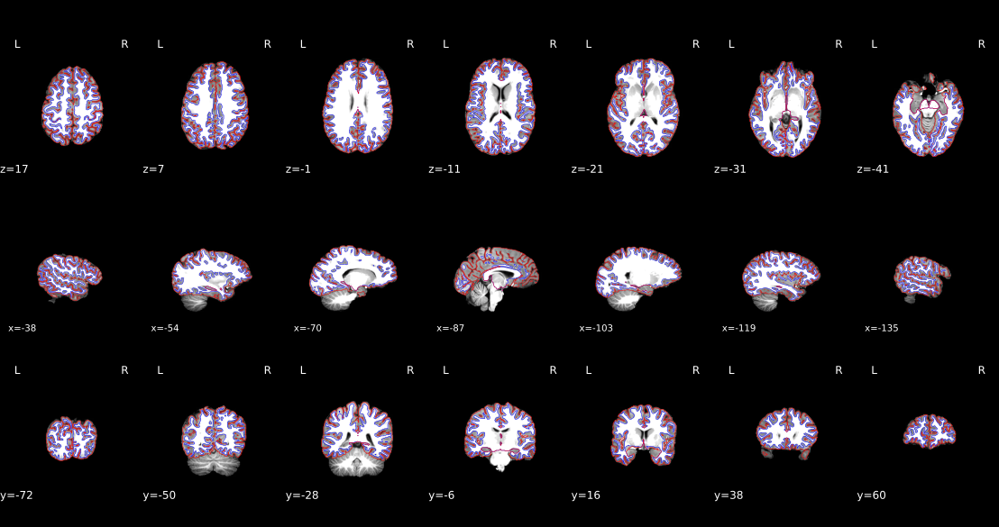
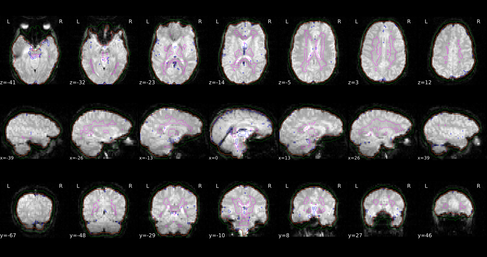
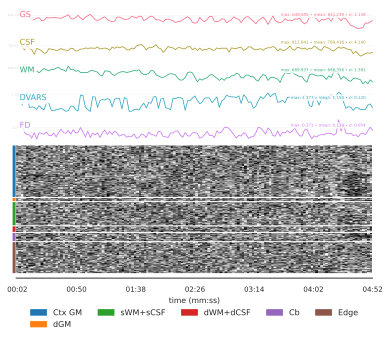

fMRIprep#
Author: Steffen Bollmann
Date: 17 Oct 2024
Citation and Resources#
Tools included in this workflow#
fMRIPrep:
Esteban, O., Markiewicz, C.J., Blair, R.W. et al. fMRIPrep: a robust preprocessing pipeline for functional MRI. Nat Methods 16, 111–116 (2019). https://doi.org/10.1038/s41592-018-0235-4
Dataset#
Flanker Dataset from OpenNeuro:
Kelly AMC and Uddin LQ and Biswal BB and Castellanos FX and Milham MP (2018). Flanker task (event-related). OpenNeuro Dataset ds000102
Kelly, A.M., Uddin, L.Q., Biswal, B.B., Castellanos, F.X., Milham, M.P. (2008). Competition between functional brain networks mediates behavioral variability. Neuroimage, 39(1):527-37
Run fMRIprep#
# load fmriprep
import module
import os
await module.load('fmriprep/24.1.0')
await module.list()
Lmod Warning: MODULEPATH is undefined.
Lmod has detected the following error: The following module(s) are unknown:
"fmriprep/24.1.0"
Please check the spelling or version number. Also try "module spider ..."
It is also possible your cache file is out-of-date; it may help to try:
$ module --ignore_cache load "fmriprep/24.1.0"
Also make sure that all modulefiles written in TCL start with the string
#%Module
[]
# Request a freesurfer license and store it in your homedirectory. This is just an exampe - please replace with your license id:
!echo "Steffen.Bollmann@cai.uq.edu.au" > ~/.license
!echo "21029" >> ~/.license
!echo "*Cqyn12sqTCxo" >> ~/.license
!echo "FSxgcvGkNR59Y" >> ~/.license
# download data
!datalad install https://github.com/OpenNeuroDatasets/ds000102.git
!cd ds000102 && datalad get sub-08
It is highly recommended to configure Git before using DataLad. Set both 'user.name' and 'user.email' configuration variables.
Cloning: 0%| | 0.00/2.00 [00:00<?, ? candidates/s]
Enumerating: 0.00 Objects [00:00, ? Objects/s]
Counting: 0%| | 0.00/27.0 [00:00<?, ? Objects/s]
Compressing: 0%| | 0.00/23.0 [00:00<?, ? Objects/s]
Receiving: 0%| | 0.00/2.15k [00:00<?, ? Objects/s]
Resolving: 0%| | 0.00/537 [00:00<?, ? Deltas/s]
[INFO ] Remote origin not usable by git-annex; setting annex-ignore
[INFO ] https://github.com/OpenNeuroDatasets/ds000102.git/config download failed: Not Found
[INFO ] Author identity unknown
|
| *** Please tell me who you are.
|
| Run
|
| git config --global user.email "you@example.com"
| git config --global user.name "Your Name"
|
| to set your account's default identity.
| Omit --global to set the identity only in this repository.
|
| fatal: unable to auto-detect email address (got 'root@f803f1259ecf.(none)')
[INFO ] git-annex: user error (git ["--git-dir=.git","--work-tree=.","--literal-pathspecs","-c","annex.dotfiles=true","commit-tree","d7a2c96fc40d5c7fa576efbc5079e9d676d50501","--no-gpg-sign","-p","refs/heads/git-annex"] exited 128)
install(error): /tmp/tmp6we86pvb/ds000102 (dataset) [CommandError: 'git -c diff.ignoreSubmodules=none -c core.quotepath=false annex init -c annex.dotfiles=true' failed with exitcode 1 under /tmp/tmp6we86pvb/ds000102] [CommandError: 'git -c diff.ignoreSubmodules=none -c core.quotepath=false annex init -c annex.dotfiles=true' failed with exitcode 1 under /tmp/tmp6we86pvb/ds000102]
/bin/bash: line 1: cd: ds000102: No such file or directory
%%bash
# set up environment variables
export SUBJECTS_DIR=$PWD/fmriprep-freesurfer-dir
export APPTAINERENV_SUBJECTS_DIR=$SUBJECTS_DIR
export ITK_GLOBAL_DEFAULT_NUMBER_OF_THREADS=2
export MPLCONFIGDIR=~/matplotlib-mpldir
# create subjects directory
mkdir -p $SUBJECTS_DIR
# run fmriprep
fmriprep ds000102/ fmriprep-output participant \
--fs-license-file ~/.license \
--output-spaces T1w MNI152NLin2009cAsym fsaverage fsnative \
--participant-label 08 \
--nprocs $ITK_GLOBAL_DEFAULT_NUMBER_OF_THREADS \
--mem 10000 \
--skip_bids_validation \
--fs-subjects-dir $SUBJECTS_DIR \
-v
bash: line 11: fmriprep: command not found
---------------------------------------------------------------------------
CalledProcessError Traceback (most recent call last)
Cell In[4], line 1
----> 1 get_ipython().run_cell_magic('bash', '', '# set up environment variables\nexport SUBJECTS_DIR=$PWD/fmriprep-freesurfer-dir\nexport APPTAINERENV_SUBJECTS_DIR=$SUBJECTS_DIR\nexport ITK_GLOBAL_DEFAULT_NUMBER_OF_THREADS=2 \nexport MPLCONFIGDIR=~/matplotlib-mpldir \n\n# create subjects directory\nmkdir -p $SUBJECTS_DIR\n\n# run fmriprep\nfmriprep ds000102/ fmriprep-output participant \\\n--fs-license-file ~/.license \\\n--output-spaces T1w MNI152NLin2009cAsym fsaverage fsnative \\\n--participant-label 08 \\\n--nprocs $ITK_GLOBAL_DEFAULT_NUMBER_OF_THREADS \\\n--mem 10000 \\\n--skip_bids_validation \\\n--fs-subjects-dir $SUBJECTS_DIR \\\n-v\n')
File /opt/conda/lib/python3.13/site-packages/IPython/core/interactiveshell.py:2565, in InteractiveShell.run_cell_magic(self, magic_name, line, cell)
2563 with self.builtin_trap:
2564 args = (magic_arg_s, cell)
-> 2565 result = fn(*args, **kwargs)
2567 # The code below prevents the output from being displayed
2568 # when using magics with decorator @output_can_be_silenced
2569 # when the last Python token in the expression is a ';'.
2570 if getattr(fn, magic.MAGIC_OUTPUT_CAN_BE_SILENCED, False):
File /opt/conda/lib/python3.13/site-packages/IPython/core/magics/script.py:160, in ScriptMagics._make_script_magic.<locals>.named_script_magic(line, cell)
158 else:
159 line = script
--> 160 return self.shebang(line, cell)
File /opt/conda/lib/python3.13/site-packages/IPython/core/magics/script.py:348, in ScriptMagics.shebang(self, line, cell)
343 if args.raise_error and p.returncode != 0:
344 # If we get here and p.returncode is still None, we must have
345 # killed it but not yet seen its return code. We don't wait for it,
346 # in case it's stuck in uninterruptible sleep. -9 = SIGKILL
347 rc = p.returncode or -9
--> 348 raise CalledProcessError(rc, cell)
CalledProcessError: Command 'b'# set up environment variables\nexport SUBJECTS_DIR=$PWD/fmriprep-freesurfer-dir\nexport APPTAINERENV_SUBJECTS_DIR=$SUBJECTS_DIR\nexport ITK_GLOBAL_DEFAULT_NUMBER_OF_THREADS=2 \nexport MPLCONFIGDIR=~/matplotlib-mpldir \n\n# create subjects directory\nmkdir -p $SUBJECTS_DIR\n\n# run fmriprep\nfmriprep ds000102/ fmriprep-output participant \\\n--fs-license-file ~/.license \\\n--output-spaces T1w MNI152NLin2009cAsym fsaverage fsnative \\\n--participant-label 08 \\\n--nprocs $ITK_GLOBAL_DEFAULT_NUMBER_OF_THREADS \\\n--mem 10000 \\\n--skip_bids_validation \\\n--fs-subjects-dir $SUBJECTS_DIR \\\n-v\n'' returned non-zero exit status 127.
fMRIprep Results#
The full result report is in fmriprep-output/sub-08.html and you can open this webpage in Jupyterlab or in the browser. Here a few items from the report as an example and for a quick check:
T1 and brain mask#
Template T1-weighted image (if several T1w images were found), with contours delineating the detected brain mask and brain tissue segmentations.
from IPython.core.display import SVG
SVG(filename='fmriprep-output/sub-08/figures/sub-08_dseg.svg')

Surfaces#
Surfaces (white and pial) reconstructed with FreeSurfer (recon-all) overlaid on the participant’s T1w template.
from IPython.core.display import SVG
SVG(filename='fmriprep-output/sub-08/figures/sub-08_desc-reconall_T1w.svg')

EPI-space to T1-space#
from IPython.core.display import SVG
SVG(filename='fmriprep-output/sub-08/figures/sub-08_task-flanker_run-1_desc-coreg_bold.svg')

Brain mask and (anatomical/temporal) CompCor ROIs#
Brain mask calculated on the BOLD signal (red contour), along with the regions of interest (ROIs) used for the estimation of physiological and movement confounding components that can be then used as nuisance regressors in analysis. The anatomical CompCor ROI (magenta contour) is a mask combining CSF and WM (white-matter), where voxels containing a minimal partial volume of GM have been removed. The temporal CompCor ROI (blue contour) contains the top 2% most variable voxels within the brain mask. The brain edge (or crown) ROI (green contour) picks signals outside but close to the brain, which are decomposed into 24 principal components.
from IPython.core.display import SVG
SVG(filename='fmriprep-output/sub-08/figures/sub-08_task-flanker_run-1_desc-rois_bold.svg')

Bold Summary#
Summary statistics are plotted, which may reveal trends or artifacts in the BOLD data. Global signals calculated within the whole-brain (GS), within the white-matter (WM) and within cerebro-spinal fluid (CSF) show the mean BOLD signal in their corresponding masks. DVARS and FD show the standardized DVARS and framewise-displacement measures for each time point. A carpet plot shows the time series for all voxels within the brain mask, or if –cifti-output was enabled, all grayordinates. Voxels are grouped into cortical (dark/light blue), and subcortical (orange) gray matter, cerebellum (green) and white matter and CSF (red), indicated by the color map on the left-hand side.
from IPython.core.display import SVG
SVG(filename='fmriprep-output/sub-08/figures/sub-08_task-flanker_run-1_desc-carpetplot_bold.svg')

Dependencies in Jupyter/Python#
Using the package watermark to document system environment and software versions used in this notebook
%load_ext watermark
%watermark
%watermark --iversions
Last updated: 2025-11-04T21:33:33.335079+00:00
Python implementation: CPython
Python version : 3.11.6
IPython version : 8.16.1
Compiler : GCC 12.3.0
OS : Linux
Release : 5.4.0-204-generic
Machine : x86_64
Processor : x86_64
CPU cores : 32
Architecture: 64bit
IPython: 8.16.1